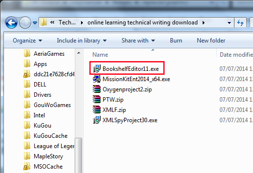

> Downloading and Installing the Bookshelf Editor >
Downloading the software
2.1. Downloading the software
To download Bookshelf Editor 1.1:
- On web page http://courses.online-learning.com, log in to your course page.
- Under Navigation, click My course.
- Click the name of your course.
- In the course information page, click the Course downloads link.
- On the Course downloads page, click BookshelfEditor11.exe.
The application file BookshelfEditor11.exe is downloaded to your Downloads directory.
